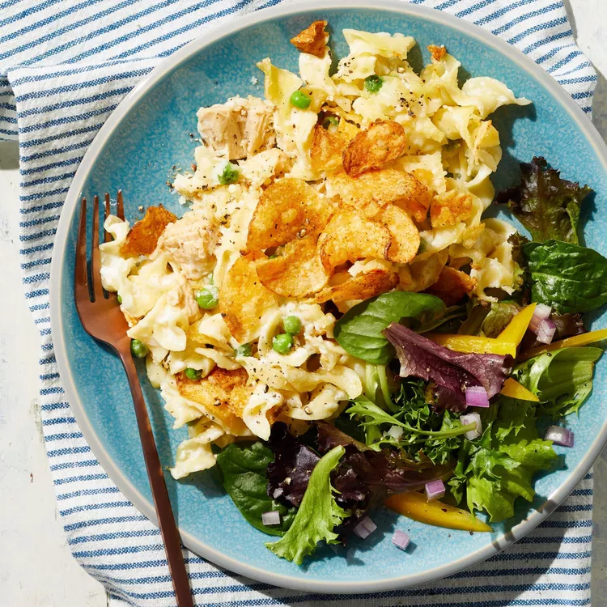

Mac & Cheese Recipe

I love Chef John's tuna-noodle-casserole. It is very sumptious and delicious to taste. It is good for a family get together.
I make it for my family on every Thanksgiving holiday. It is usually the first to
finish on the dining table. Everybody loves it.
Prep Time: 15 mins
Cook Time: 1 Hr 10 mins
Total Time 1 hr 55 mins
Servings: 8
Ingredients
- 3 tablespoons unsalted butter
- 1/2 cup finely diced yellow onion
- 1 1/2 teaspoons kosher salt divided
- 3 tablespoons all-purpose flour
- 4 cups cold milk
- 1 cup shredded white Cheddar cheese
- 1 (12 ounce) package dry egg noodles
- 2 (5.5 ounce) can tuna packed in olive oil drained and crumbled to taste
- 3.4 cup frozen peas, thawed and drained
- 1 pinch cayenne peper
- 1/4 teaspoon Worcestershire sauce
- 1 teaspoon freshly ground black pepper
- 1/2 cup plain bread crumbs
- 1/2 grated Parmigiano-Reggiano cheese
- 2 tablespoons olive oil
Directions
- Preheat oven to 375 degrees F (190 degrees C). Lightly butter a 9x13-inch casserole
dish.
- Melt 3 tablespoons butter in a medium saucepan over medium heat. Saute onion
with 1/2 teaspoon kosher salt until it starts to soften up and turn translucent,
3 to 4 minutes. Add the flour, and cook, stirring, for 3 minutes, reducing heat if
needed.
- Pour in cold milk and whisk for 1 minute. Raise heat to medium-high and cook,
stirring often, until the sauce thickens and comes to a simmer. Remove from heat,
whisk in Cheddar cheese, and reserve until needed.
- Fill a large pot with water and remaining salt and bring to a rapid boil. Cook egg
noodles for 5 minutes. Drain well and add to a large mixing bowl. Stir in the reserved sauce,
followed by tuna, peas, cayenne, black pepper, and Worcestershire sauce. Mix with a
spatula until evenly combined.
- Pour mixture into the prepared dish. Mix bread crumbs, Parmigiano-Reggiano cheese,
and olive oil together in a small bowl until combined and resembling wet sand. Sprinkle evenly over the casserole.
- Bake in the center of the preheated oven until browned and bubbly, about 30 minutes.
Let sit for 10 minutes before cutting and serving.
Bon Apetite!!